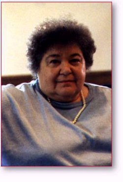

Iowa Office
Billie Jean Houck is a 65 year old retired school teacher who volunteers 4 days a week for the Iowa Clinton/Gore campaign. She lives in Clive, Iowa, a suburb of Des Moines, with her husband Edwin. Billie Jean was born in Pittsburgh but has lived in Iowa most of her life.
Billie Jean is a dedicated Democrat and feels that the election process is very important. She has been a devoted Bill Clinton supporter since he spoke at the Iowa Jefferson Jackson Day dinner before the 1992 election. She feels that the President is doing a good job on the issues that matter most — education, health care, taxes and crime.
The Iowa office couldn't function without Billie Jean. She is reliable, always willing to help out with events, and very pleasant to have around. They would be lost without her.
Paid for by Clinton/Gore ’96 General Committee, Inc.